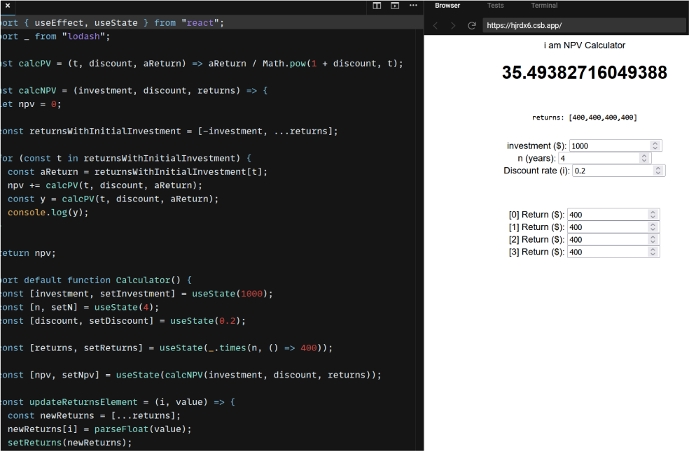
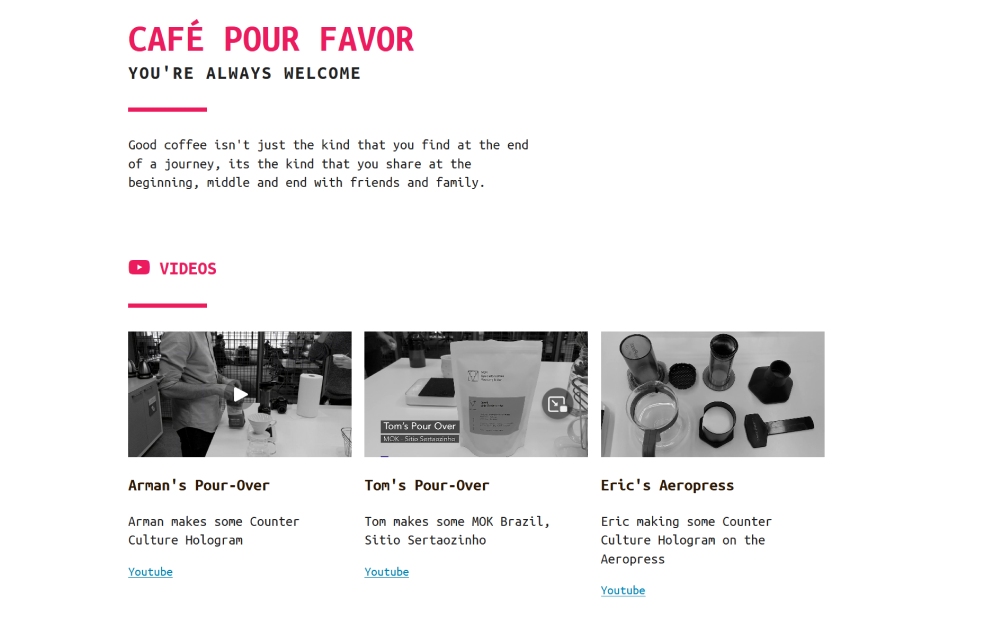
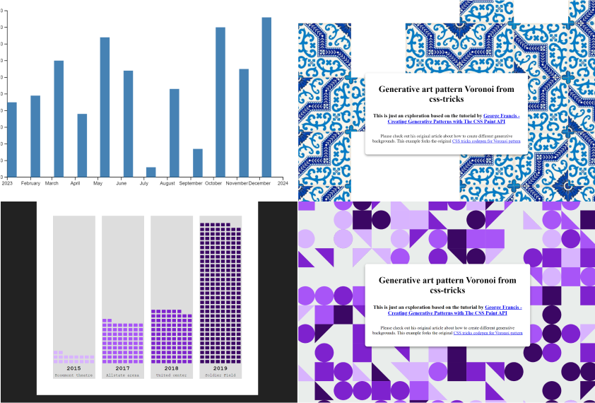
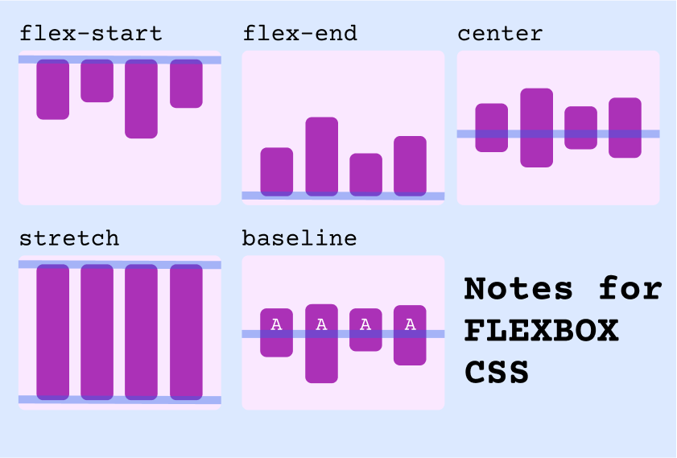

Sections
🚀 Launched

Net Present Value 101arrow_forward
Learning about investment NPV. Prototype in HTML and React versions

pourfavor.coffeearrow_forward
A simple website about coffee. Built with Tachyons.io CSS library
🔧 In progress
🗄️ Archived

Mini Projectsarrow_forward
This page is for listing out multiple mini projects that are explorations or half-baked!

Flexbox - WIP
Interactive project for learning Flexbox basics based on css-tricks.com guide